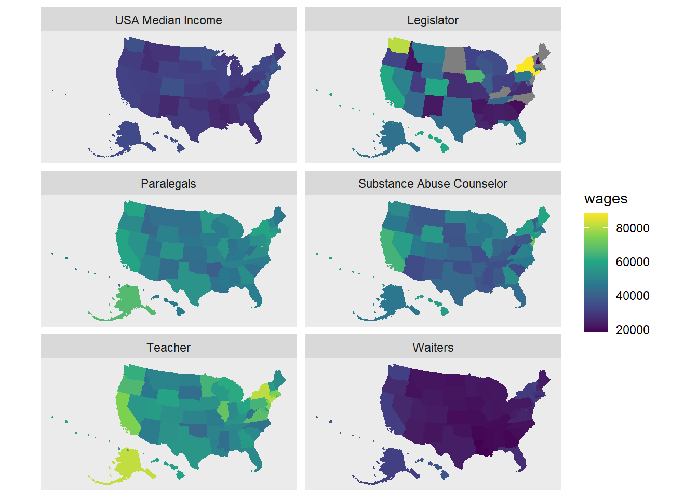

library(tidyverse) # Tidyverse for Tidy Data
library(readxl)
library(tigris) # Get Census Geography Poloygons
library(sf)
library(tidycensus)Using the tigris package get Census Tiger shapefiles for census geographies. Tigris will return the shapefile in the sf, or simple features, format.
us_geo <- tigris::states(class = "sf") %>%
shift_geometry()I’ve already downloaded and stored some data from the Bureau of Labor Statistics. Thoses data are stored in an excel file in the data directory of the repository: data/OES_Report.xlsx. The goal is to attach this data to the previously downloaded shapefiles.
But you may be intersted in how I gathered the data. below are some summary notes documenting my steps of gathering the data from the Bureau of Labor Statistics.
https://data.bls.gov/oes/#/occGeo/One%20occupation%20for%20multiple%20geographical%20areas
One occupation for multiple geographical areas
Mental Health and Substance Abuse Social Workers (Also, Secondary School Teacher, Waiter, Legislator, and Paralegals)
State
All States in this list
Annual Mean wage
my_xl_files <- fs::dir_ls(path = "data", glob = "*.xlsx")
my_df <- my_xl_files %>%
map_dfr(read_excel,
col_types = c("text", "numeric"),
skip = 4,
.id = "sheet")state_names <- us_geo %>%
filter(REGION != "9") %>%
select(NAME) %>%
st_drop_geometry()Before we join the BLS data to the shapefile us_geo we need to transform BLS data
my_df <- my_df %>%
rename(area = "Area Name",
wages = "Annual mean wage(2)",
type = sheet) %>%
mutate(State = str_extract(area, '.*(?=\\()')) %>%
mutate(type = str_extract(type, "(?<=data/OES_)\\w+")) Some of the BLS data are missing making it hard to visualize. As a remedy to this problem we will wrangle the data by preserving shape geometry even for states without any wage data.
missing_states_legislators <- state_names %>%
anti_join(my_df %>% filter(type == "legislator"),
by = c("NAME" = "State")) %>%
mutate(type = "legislator") %>%
rename(State = NAME)
missing_states_legislatorsmy_df <- my_df %>%
bind_rows(missing_states_legislators)Using the dplyr::left_join merge BLS data to the previously loaded shape object
my_df <- us_geo %>%
left_join(my_df, by = c("NAME" = "State"))Filter to the 50 states + D.C.
my_df <- my_df %>%
filter(REGION != 9) B01003_001E = Total Population B06011_001E = Median income in the past 12 months –!!Total:
variables_census <- load_variables(2015, "acs5", cache = TRUE)us_pop <-
get_acs(geography = "state",
variables = "B06011_001E",
geometry = TRUE) %>%
shift_geometry()## Getting data from the 2015-2019 5-year ACS## Downloading feature geometry from the Census website. To cache shapefiles for use in future sessions, set `options(tigris_use_cache = TRUE)`.us_pop <- us_pop %>%
mutate(type = "USA Median Income") %>%
rename(wages = estimate) %>%
filter(NAME != "Puerto Rico")my_df <- bind_rows(my_df, us_pop)Make the category variable a categorical factor with levels. This will improve the order of the facets when displayed.
display_levels <- c("USA Median Income", "Legislator",
"Paralegals", "Substance Abuse Counselor",
"Teacher", "Waiters")
my_df <- my_df %>%
mutate(category = case_when(
type == "USA Median Income" ~ "USA Median Income",
type == "legislator" ~ "Legislator",
type == "paralegals" ~ "Paralegals",
type == "Report" ~ "Substance Abuse Counselor",
type == "secondary_school_teacher" ~ "Teacher",
type == "waiters" ~ "Waiters"
)) %>%
mutate(category = factor(category, display_levels))my_df %>%
ggplot(aes(fill = wages, color = wages)) +
geom_sf() +
coord_sf(crs = 5070, datum = NA) +
scale_fill_viridis_c() +
scale_color_viridis_c() +
facet_wrap(~ category,
nrow = 3, ncol = 2)
ggsave("facet_map.png", width = 8, height = 8, units = "in")